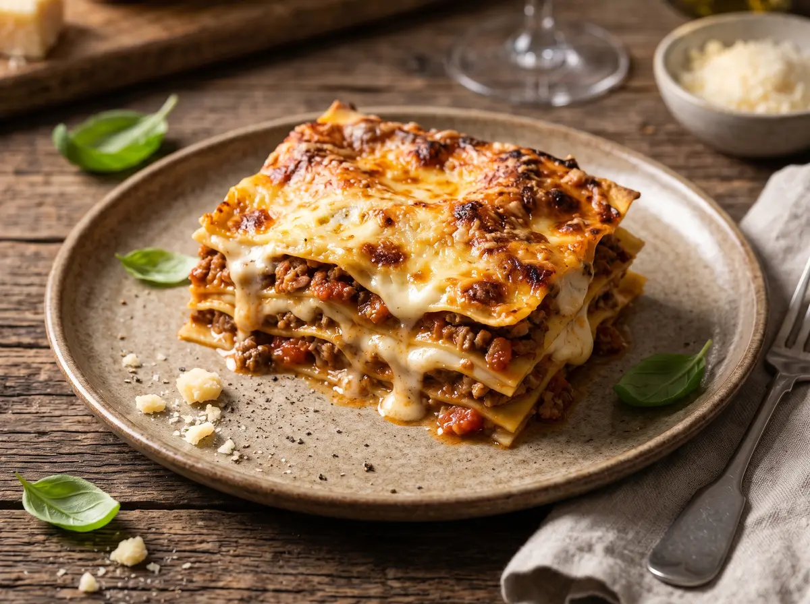

Traditional Lasagna Bolognese Recipe

Home
Description:
Traditional Lasagna with savory Bolognese, creamy béchamel, and a golden-brown cheese crust.
For 4 servings.
Ingredients
For the Bolognese:
- 1 onion
- 2 garlic clove(s)
- 1 bunch of parsley (or frozen)
- 2 tbsp olive oil
- 500g mixed ground meat (beef/pork)
- 1 tbsp tomato paste
- 1 can of peeled tomatoes (~800g)
- 50-100ml broth or a shot of balsamic vinegar
- Salt and pepper to taste
- Optional: a splash of red wine
For the Béchamel Sauce:
- 30g butter
- 40g flour
- 500ml milk
- Salt and pepper to taste
- 2 tsp lemon juice
- 1 pinch of nutmeg, freshly grated
Additionally:
- Fat for the baking dish
- 300g lasagna sheets
- 200g grated cheese; gouda, emmental or mozarella
- 20g butter flakes or pats of butter
Preparation
Total time: 1h 40min | Prep time: 30min | Cooking/baking time: 1h 10min | Resting time: 10min
- For the Bolognese sauce, peel and finely dice the onion.
Peel and finely chop the garlic (or slice it very thinly).
Wash the parsley, shake it dry, and finely chop it.
- Heat 1–2 tbsp olive oil in a wide pot over high heat.
Add the ground meat and cook for 5–7 minutes, breaking it up into small pieces.
Wait 1–2 minutes before turning the ground meat with a wooden spoon or spatula to develop roasted flavors.
- Add the diced onions to the browned ground meat and cook for 2–3 minutes, until the onions are translucent.
Add the minced garlic and chopped parsley and cook for 30–60 seconds.
Stir in the tomato paste and cook for 1 minute.
- Add the peeled tomatoes to the ground beef mixture.
Roughly crush the tomatoes with a wooden spoon or spatula.
Optionally, stir in red wine (or broth/balsamic vinegar).
Season with salt and pepper.
Let the Bolognese sauce simmer gently, uncovered, for 30–40 minutes, stirring every 5–10 minutes.
Be sure to scrape up the browned bits from the bottom of the pan as you stir.
- For the béchamel sauce, melt the butter in a saucepan over medium heat.
Quickly stir in the flour and cook for 1–2 minutes, stirring constantly, until lightly browned.
- Add the milk in 3–4 batches, whisking continuously until the sauce is smooth.
Simmer gently over low heat for 8–12 minutes, stirring regularly all the way to the bottom of the pot.
Season to taste with salt, pepper, lemon juice, and nutmeg.
- Preheat the oven to 180 °C (top/bottom heat).
Grease the baking dish evenly.
- Spread a layer of Bolognese sauce evenly over the bottom of the baking dish.
Place lasagna sheets on top, making sure they don’t overlap.
Add another layer of Bolognese sauce and cover it with a thin layer of béchamel sauce.
Then add another layer of lasagna sheets.
Continue layering in this order until all ingredients are used up.
The final layer should be béchamel sauce.
- Sprinkle grated cheese evenly over the surface and add small flakes of butter on top of it.
- Bake in a preheated oven at 180 °C (top and bottom heat) for 35–45 minutes, until the surface is golden brown.
Let it rest for 10 to 15 minutes before cutting.